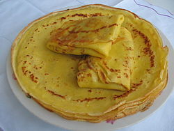

Pancakes

Description
A classic recipe for one of the simplest flour products, suitable for breakfast, lunch and evening.
Thin pancakes are prepared from liquid dough by frying in a pan. They are used as a stand-alone dish or with numerous fillings.
It is possible that pancakes were the first flour products, their history dates back to prehistoric times.
Ingridients
- 500 ml of milk
- 3 eggs
- 200 g of flour
- 30 g of butter
- 30 g of sugar
- 2-3 g of salt
Steps
- To begin, you need to prepare all the ingredients. It is desirable that they were at room temperature.
- Beat the eggs in a bowl for beating, add sugar and salt. Mix until smooth with a mixer or just a fork.
- Add a small amount of milk to the egg mass and mix the mass until smooth.
- Sift the flour into a container and mix the dough again, making sure it is free of lumps.
- Then, without stopping to stir, add the remaining milk and melted butter. The dough is ready.
- A special pancake pan is best for frying pancakes. Before cooking, it should be lubricated with oil using a silicone brush or just a napkin.
- Heat a frying pan well and pour the dough on it, at the same time rotating it in a circle so that the dough covers the bottom with an even thin layer.
- Fry the pancake on both sides. Be sure to make sure that it does not burn from below. When the pancake becomes ruddy at the bottom, remove it from the pan.
- Ready pancakes spread on a large flat plate. To keep them hot, cover them with a lid.
- A good filling for pancakes will be sour cream, condensed milk, honey, jam or any other filling that you prefer. Bon Appetit!
Enjoy your pancakes!